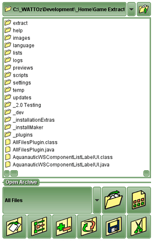
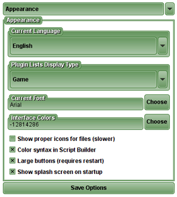

SidePanel
Back to Index
A SidePanel is any panel that appears on the "side" (right) of the program. There are a number of different SidePanels, the most common being the one that displays the
DirectoryList
.

DirectoryList SidePanel

Options SidePanel